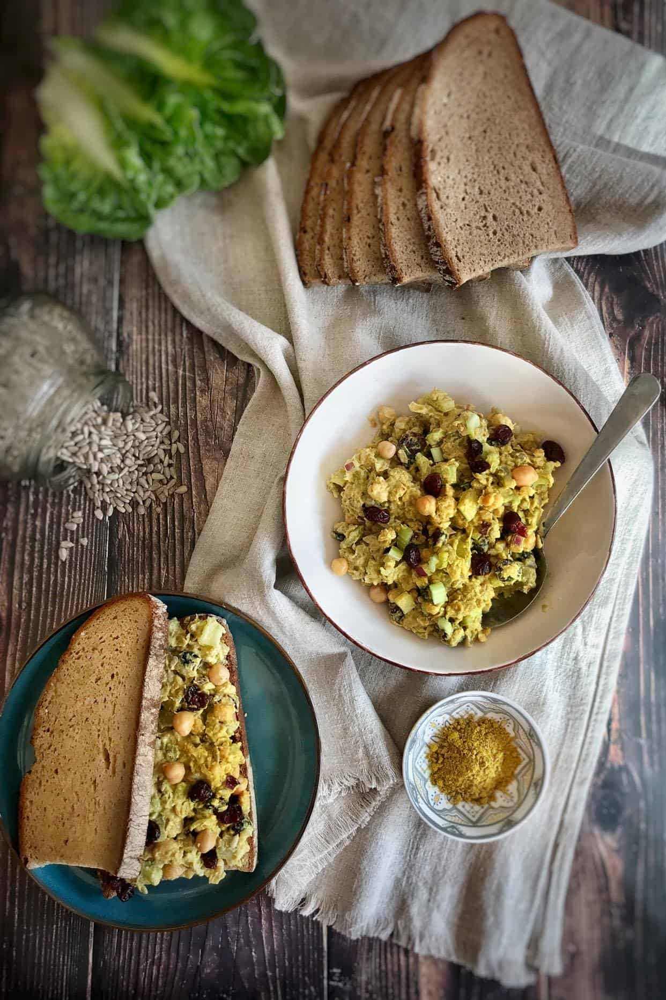

Chicpea curry sallad
Back

Description
A super tasty chicpea curry sallad that is packing a lot of falvor, and super easy to make.
Ingredients
- 1 15 oz can chickpeas (drained and rinsed)
- ¾ to 1 cup vegan aioli (or sub your favorite vegan mayo or unsweetened vegan yogurt)
- ½ cup sunflower seeds
- ½ cup dried cranberries
- ½ cup diced celery
- ½ cup diced sweet pickles
- ¼ cup diced red onion
- 1 tsp dijon mustard
- 3 tsp curry powder
- cracked black pepper
Steps
- Drain and rinse your chickpeas, then add them to a bowl and mash them with a potato masher or fork.
You don't need to fully mash all of the chickpeas, and it will actually give the chickpea salad a
better texture if you leave it a bit chunky.
- Next, add the other ingredients and mix to combine. At this point, you might need to add a little
more yogurt or vegan mayo, depending on how thick it is (they can vary). Then adjust seasonings to
taste and the chickpea salad is ready to serve! So simple and quick!